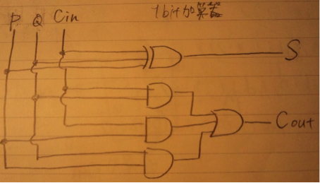
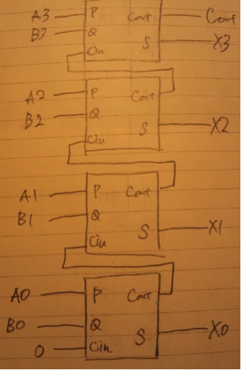
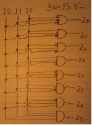
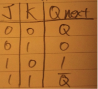
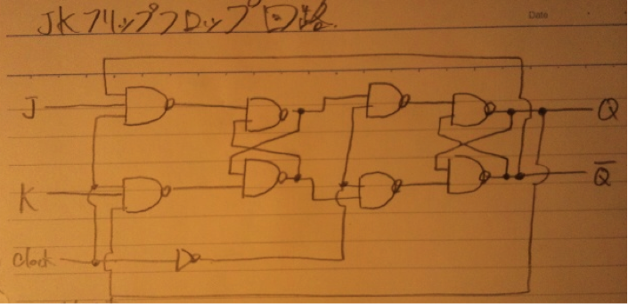

| c | A | C | G | T |
| q[c] | 2 | 7 | 1 | 9 |
| 位置 | 0 | 1 | 2 | 3 | 4 | 5 | 6 | 7 | 8 | 9 | 10 | 11 | 12 | 13 | 14 | 15 | 16 | 17 | 18 | 19 | 20 | 21 | 22 | 23 |
| C | A | T | C | G | C | G | G | A | G | A | G | T | A | T | A | G | C | A | G | A | G | A | G | |
| 1 | G | C | A | G | A | G | A | G | ||||||||||||||||
| 2 | G | C | A | G | A | G | A | G | ||||||||||||||||
| 3 | G | C | A | G | A | G | A | G | ||||||||||||||||
| 4 | G | C | A | G | A | G | A | G | ||||||||||||||||
| 5 | G | C | A | G | A | G | A | G | ||||||||||||||||
| 6 | G | C | A | G | A | G | A | G |
上記表より、照合位置0,2,4,13,14,16
| 位置 | 1 | 2 | 3 | 4 | 5 | 6 | 7 | 8 | 9 | 10 | 11 | 12 | 13 | 14 | 15 | 16 | 17 | 18 | 19 | 20 | 21 | 22 | 23 | 24 |
| G | C | A | G | A | G | A | A | G | G | G | G | G | G | G | G | G | C | A | G | A | G | A | G | |
| G | C | A | G | A | G | A | G | |||||||||||||||||
| G | C | A | G | A | G | A | G | |||||||||||||||||
| G | C | A | G | A | G | A | G | |||||||||||||||||
| G | C | A | G | A | G | A | G | |||||||||||||||||
| G | C | A | G | A | G | A | G | |||||||||||||||||
| G | C | A | G | A | G | A | G | |||||||||||||||||
| G | C | A | G | A | G | A | G | |||||||||||||||||
| G | C | A | G | A | G | A | G | |||||||||||||||||
| G | C | A | G | A | G | A | G | |||||||||||||||||
| G | C | A | G | A | G | A | G | |||||||||||||||||
| G | C | A | G | A | G | A | G |
ターン自身からスキップ表を求めるKMP法。
上記問題の例だと、
| Skip表 | |||||||
| G | C | A | G | A | G | A | G |
| 1 | 1 | 3 | 3 | 5 | 5 | 5 | 7 |
となる。左から検索対象文字列とパターンを照合するとき、不一致になった場所によってskip表で示すシフト数分シフトすればよい。例えばGCAと照合中にAで不一致になった場合は、1つシフトしてもGの右隣はCであることは分かっているので、不一致になることは明らかである。よって３つシフトしてもよいので、スキップ表の３文字目のAは3となる。
命令数 I = 5*10^7 を0.25秒で実行したので、1秒間では
I*4 = 5*10^7 * 4 = 20*10^7 = 2*10^8命令
MIPSに直すために10^6で除算すると、
200MIPS
((100*10^6 )*0.25)/(5*10^7 ) = 0.5
スーパースカラ
パイプラインを複数用意する命令レベルでの並列アーキテクチャ。ハードウェアが命令の並列性を動的に検出する方法。
又は
VLIW
１命令にコンパイラが複数の演算を組み込むことにより命令レベルでの並列性を上げる並列アーキテクチャ。
以上の技術により、１クロックで１命令以上の命令を同時に実行することが可能となり、CPIが１以下になることもありうる。
OSはリソースに対してそれぞれアクセスレベルを提供する。リングプロテクションは2レベル以上で構成されており、高レベルの権限を持つリソースに低レベルのリソースの任意の使用を禁止することでデータや機能の障害からの保護、セキュリティ向上を実現する。OSに割り振られる０レベル（カーネルモード）であればCPUやメモリなどと直接やりとり可能。
個人がどのリソースに対してどのようなアクセス権限を持つのかを示した表。
ACLをさらに細分化し操作を制限することにより、セキュリティを高める方法？
e.g. 教員は成績管理ページの、Aページのみ書き込み可能。
・プロセスの状態（実行状態・実行可能状態・待ち状態）
・プログラムカウンタ
・スタックフレーム
・ヒープ領域
・待ち時間
・既実行時間
など。
・I/O bound なプロセス
入出力待ちとなることが多いプロセスのこと。
・CPU-bound なプロセス
計算処理主体のプロセス
・セマフォア
セマフォア変数、セマフォア名、待ち行列をデータ構造として持つ構造体であり、この構造体に対する命令であるP命令とV命令によって並行プロセスには欠かせない排他制御を実現する。プロセスはP命令によってセマフォア変数の値を１減らすが、０の場合は待ち行列に入る。V命令時に待ち行列にプロセスがあれば、そのプロセスを実行可能状態にし、無ければセマフォア変数の値を１増やす。
・モニタ
オブジェクト指向の考え方を利用した排他制御。メソッドの実行が排他的であることを利用して排他制御を実現する。
・到着時間順スケジューリング
最も公平で単純な方式で実装が容易。しかし１００秒、１秒、１秒の所要時間のプロセスがこの順番で到着した場合、平均応答時間が非常に大きくなってしまう。
・処理時間順スケジューリング
理論上応答時間を最小にする方式ではあるが、実際にはプロセスの所要時間を処理開始時に知ることは困難であるため、経験則に基づく近似的なアルゴリズムを使わざるを得ない。
・優先度順スケジューリング
プロセスに優先度をもたせることにより、より重要なプロセスから処理をすることが可能であるが、スタベーション、すなわち高負担時に優先度の低いプロセスになかなかCPUリソースが回ってこないという欠点がある。解決にはエージング方式を取り入れるのが有効。
待ち行列に並んでいるプロセスによらず、一定時間で次に実行するプロセスを決定出来るスケジューリングアルゴリズム。従来の一つのプロセスの待ち行列から最も優先度の高いプロセスの探索にプロセス数に比例した処理時間が掛かっていたが、優先度別に複数の待ち行列を用意することで、プロセス数に依存しない処理時間でのスケジューリングを可能にする。これをO(1)スケジューラと呼ぶ。
各プロセスの実行時間と待ち時間を元に、プロセスの実行時期を計算し、その時間をキーとする赤黒木に格納するプロセスの公平性を目指したスケジューリング方式。この赤黒木を元に実行プロセスを決定する。
C言語
int Ack(int m, int n){
if(m==0) return n+1;
else if(n==0) return Ack(m-1,1);
else return Ack(m-1, Ack(m,n-1));
}
| m/n | 0 | 1 | 2 | 3 | 4 | n |
| 0 | 1 | 2 | 3 | 4 | 5 | n+1 |
| 1 | 2 | 3 | 4 | 5 | 6 | n+2 |
| 2 | 3 | 5 | 7 | 9 | 11 | 2n+3 |
A(2,1) = A(1,A(2,0))
=A(1,A(1,1))
=A(1,A(0,A(1,0))
=A(1,A(0,A(0,1))
=A(1,A(0,2))
=A(1,3)
=A(0,A(1,2)) =A(0,A(0,A(1,1)))
=A(0,A(0,A(0,A(1,0))))
=A(0,A(0,A(0,A(0,1))))
=A(0,A(0,A(0,2)))
=A(0,A(0,3))
=A(0,4)
=5
???
TCPヘッダ
SourcePort : 送信元ポート 16bit
送信するアプリケーションを識別するためのポート番号を示す。16bitあるので1?65535まで利用可能。０は不可。
Destination Port : 宛先ポート番号
宛先のアプリケーションを識別するためのポート番号を示す。
IPアドレスだけでは、相手にパケットは届くものの、相手のどのアプリケーション宛であるかが分からない。そこでアプリケーションを識別するため、各アプリケーションにはポート番号が割り当てられ、これに基づいてパケットを受信する。
信頼性ある通信のためには、送信したパケットがデータのどの部分であるのかが明確でなくてはならない。シーケンス番号はこれを表す。受信側はシーケンス番号を基にパケットを結合し、分割されたデータを復元することが出来る。
送信元にどのパケットが必要であるかを伝えるための信号。どこまで受信できたのかを伝えるための信号。受信側が不足しているパケットを送信元に伝えることで、パケットの漏れを防ぐ。例え途中で破棄されても、同一番号のパケットを再度送信元に要求すればよい。
TCPには６つのフラグを持っている。
URG：(Urgent)緊急データが含まれていることを示すフラグ
ACK：(Acknowledge有効なACK番号がTCPヘッダに含まれていることを示すフラグ
PSH：（Push）受信したデータをすぐにアプリケーションに引き渡すことを要求。応答性の確保に必要。
RST：（Reset）TCP接続を中断、拒否したい場合にセット。現在のTCP接続を強制終了することが可能。
SYN：(Synchronize) 3ウェイハンドシェイクにおいて双方がSYNフラグをONにして双方のACK番号を同期させる。以降はセットされない。
FIN：(Finis) TCP接続を終了させるためにセットされるフラグ。双方からFINが送られるとTCP接続が終了される。
受信側のウィンドウサイズを相手に伝えるために使用。ウィンドウサイズ、つまり受信側のバッファの空きを送信側に伝えることにより、バッファが一杯になるまでは送信側はACKを待たずにパケットを続けて送信出来る。逆に溢れないようにする役目もある。
・受信開始時にいきなり大量のデータを転送すると、経路上のネットワークで輻輳が発生していた場合に危険である。そこで最初は送信データ容量を少なくさせ、ACKのウィンドウサイズと比較しながら、次第にウィンドウサイズまで送信量を増やす。これをスロースタートと呼ぶ。
・過度に送信すると、パケットが途中で破棄されてしまう可能性が高くなる。そこでパケットが破棄された場合に送信量を抑える制御がある。
通信路上に伝送誤りや故障の可能性がある以上、 エンドシステム間でのデータの検証が必要だという認識から生まれた。 例えば、ファイル転送の場合、いくら信頼性の高い伝送路を構築しても、 それだけでは転送を保証できない。 他にも、ルータやホストにおけるメモリのビットエラー、ファイルシステムのバグ、 ディスクのエラー等が起こり得る。 最終的にはアプリケーションがエラーチェックをする必要があるのだ。
ネットワーク内部には最低限の機能だけを持たせて、 新しいアプリケーションやプロトコルがエンドシステムだけで自由に導入できるようにし、 システムの柔軟性と拡張性を確保するというのがend-to-end通信の提案者達の主張だった。


| S’3 | S’2 | S’1 | S’0 | Cout | S3 | S2 | S1 | S0 |
| 0 | 0 | 0 | 1 | 0 | 0 | 0 | 0 | 1 |
| 0 | 0 | 1 | 0 | 0 | 0 | 0 | 1 | 0 |
| 0 | 0 | 1 | 1 | 0 | 0 | 0 | 1 | 1 |
| 0 | 1 | 0 | 0 | 0 | 0 | 1 | 0 | 0 |
| 0 | 1 | 0 | 1 | 0 | 0 | 1 | 0 | 1 |
| 0 | 1 | 1 | 0 | 0 | 0 | 1 | 1 | 0 |
| 0 | 1 | 1 | 1 | 0 | 0 | 1 | 1 | 1 |
| 1 | 0 | 0 | 0 | 0 | 1 | 0 | 0 | 0 |
| 1 | 0 | 0 | 1 | 0 | 1 | 0 | 0 | 1 |
| 1 | 0 | 1 | 0 | 1 | 0 | 0 | 0 | 0 |
| 1 | 0 | 1 | 1 | 1 | 0 | 0 | 0 | 1 |
| 1 | 1 | 0 | 0 | 1 | 0 | 0 | 1 | 0 |
| 1 | 1 | 0 | 1 | 1 | 0 | 0 | 1 | 1 |
| 1 | 1 | 1 | 0 | 1 | 0 | 1 | 0 | 0 |
| 1 | 1 | 1 | 1 | 1 | 0 | 1 | 0 | 1 |
| * | * | * | * | 1 | S’3 | S’2 | S’1 | S’0 |
※BCDadder回路がネットから引っ張ってきたもののため、著作権の関係で掲載不可。4bit加算器を２つ組み合わせたもの＋αで構築可能。
| I2 | I1 | I0 | 出力 |
| 0 | 0 | 0 | Z0 |
| 0 | 0 | 1 | Z1 |
| 0 | 1 | 0 | Z2 |
| 0 | 1 | 1 | Z3 |
| 1 | 0 | 0 | Z4 |
| 1 | 0 | 1 | Z5 |
| 1 | 1 | 0 | Z6 |
| 1 | 1 | 1 | Z7 |
上記真理値表より、



値を記憶する順序回路のこと。以上のJKフリップフロップ回路は、クロック入力がアサート時に左半分のフリップフロップに値が伝わり、ネゲート時にスレーブに値が伝わり出力される。クロック時に(J,K)=(0,0)であれば値はそのまま保持。(0,1)であれば０に。(1,0)であれば１に。(1,1)であれば現在の値を反転させる。
クロック周波数を高くすれば高くするほど消費電力が増し、熱暴走の問題が発生してしまうため、現在の技術ではこれ以上クロック周波数を上げることは困難なところまで来ている。また、この問題を解決したからと言って限界が無い訳ではなく、現在のプロセッサの構造では電子の速度より高速化することは不可能であり、これが限界となる。
小型化による高速化も限界に近づいており、あまりに小さくし過ぎると隣の回路に電子が漏れてしまうリーク電流の問題もある。